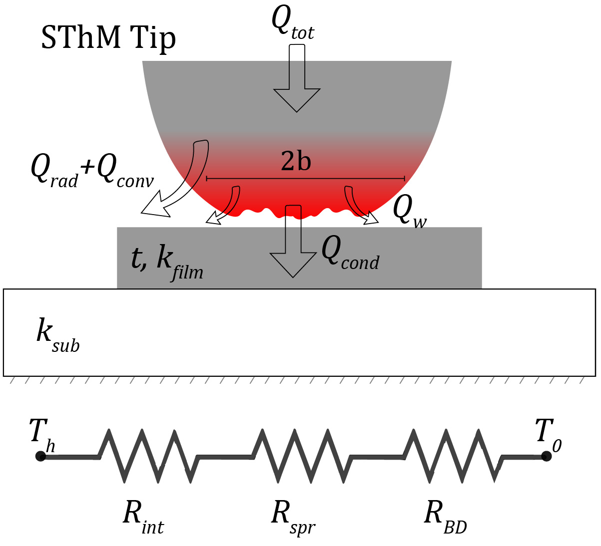
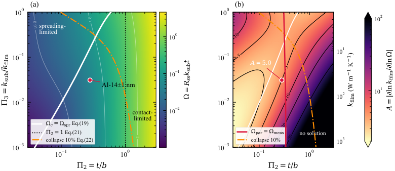
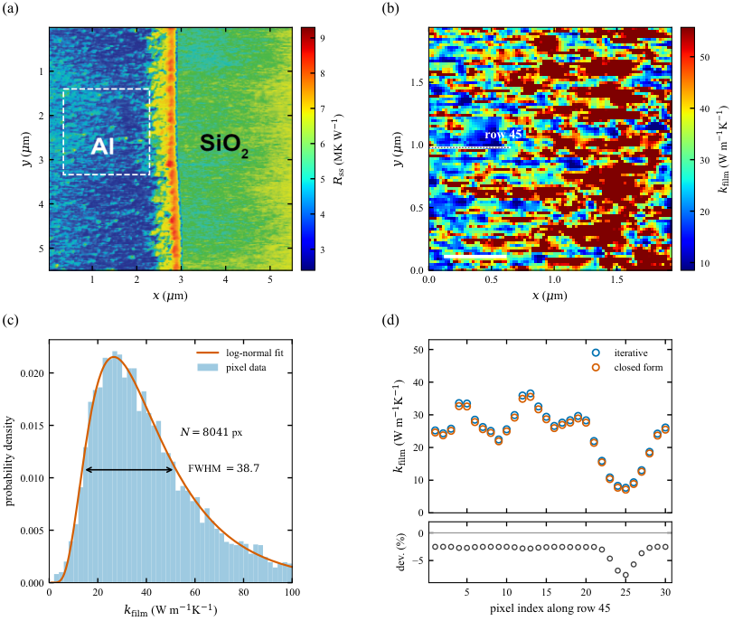

The dimensional analysis and algebraic derivations were formally verified in Lean 4 with Mathlib, sorry-free. Bessel-integral results were excluded because Mathlib lacks Bessel functions.
Abstract
Thermal conductivity ($κ$) measurement of a thin film is critical for developing thermal management materials in heterogeneous systems. A nanoscale point contact method based on scanning thermal microscopy (SThM) offers a unique approach to probe $κ$ with nanoscale spatial resolution in sub-100 nm thick films. Extracting $κ$ of a thin film from this method requires separating film, substrate, and interface contributions that are comparable in magnitude. Multiple unknowns make this extraction a high dimensional problem. In this work, we used dimensional analysis to reduce the number of variables to provide physical insights into the realistic bounds of $κ$ measurement. We show that the total tip-sample thermal resistance $R_{ss}$, originally a function of six variables, reduces to four independent dimensionless groups. These groups are used to construct a mathematical relation that captures the dependence of $R_{ss}$ on the governing parameters. The resulting analysis shows that the point contact tip-film-substrate problem is governed by a single dimensionless invariant, $Ω= R_{ss}κ_{\mathrm{sub}}t$, and two control parameters: the confinement ratio $t/b$ and the thermal contrast $κ_{\mathrm{sub}}/κ_{\mathrm{film}}$. From the invariant, we derive an amplification factor, set only by the contact geometry and the interfaces, that converts the uncertainty of a measurement into an uncertainty in the extracted conductivity. This factor scales with the ratio of the parasitic interface resistance to the film's sheet thermal resistance and bounds the film conductivity that a given contact can resolve. We apply the framework to a 14$\pm$1 nm Al film grown on SiO$_2$ to locate the measurement within the established bound. The framework then lets us map its thermal resistance with sub-100 nm spatial resolution and recover the local thermal conductivity.
Problem
Extracting the thermal conductivity of sub-100 nm films from scanning thermal microscopy point-contact measurements requires separating film, substrate, and interface contributions of comparable size. This makes it a high-dimensional inverse problem with unclear measurability limits.
Approach
Buckingham Pi dimensional analysis reduces the six-variable tip-sample thermal resistance model to four independent dimensionless groups. This yields a single measured invariant Ω = R_ss κ_sub t and two control parameters, t/b and κ_sub/κ_film. An amplification factor relating measurement error to conductivity error is derived, giving a measurability bound. The dimensional analysis and algebraic results were machine-checked in Lean 4 with Mathlib, developed with assistance from Claude; the Lean source is available on request.

Figure 1: Schematic of the SThM tip-sample contact geometry.

Figure 2: Regime map at the nominal film thickness t=15 nm (calibrated parameters for Al film: \Lambda_{c}=0.753 , \Lambda_{\mathrm{BD}}=2.17 ); varying \Pi_{2} corresponds to varying b . (a) Invariant \Omega (color). Solid white: contact/spreading boundary [Eq. ( 19 )]; dotted: \Pi_{2}=1 [Eq. ( 21 )]; dash-dotted: 10\% collapse boundary [Eq. ( 22 )]. The buried-interface boundary [Eq. ( 20 )] has
Results
The (t/b, κ_sub/κ_film) plane divides into spreading-limited and contact-limited regimes. The amplification factor scales with the ratio of parasitic interface resistance to the film's sheet thermal resistance. For a 14±1 nm Al film on SiO2, the film contributes 26% of the signal with amplification A=5.2, and pixel-level conductivity maps at sub-100 nm resolution are recovered.

Figure 3: Pixel-level thermal conductivity mapping of a 14 \pm 1 nm Al film on SiO 2 (1500 nm)/Si. (a) Measured solid-solid thermal resistance R_{ss} across the Al/SiO 2 edge, from Ref. 21 ; the dashed square marks a region of the Al film of the size analyzed in (b)-(d). (b) Thermal conductivity map of the Al film, 1.94\times 1.94 \mu m 2 (90 \times 90 pixels), obtained by applying the closed-form